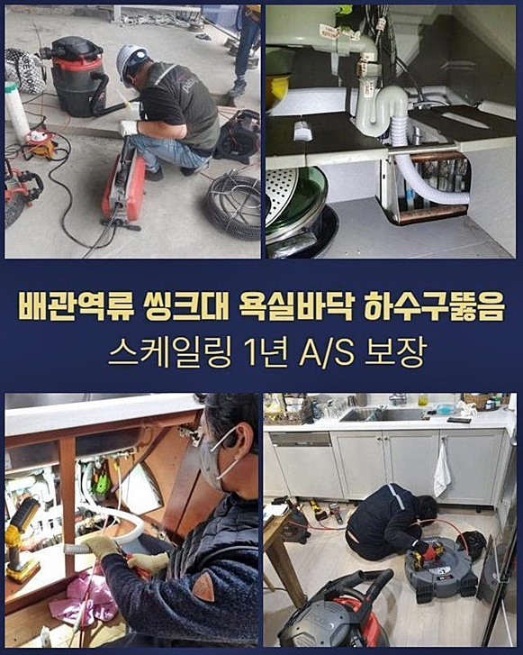
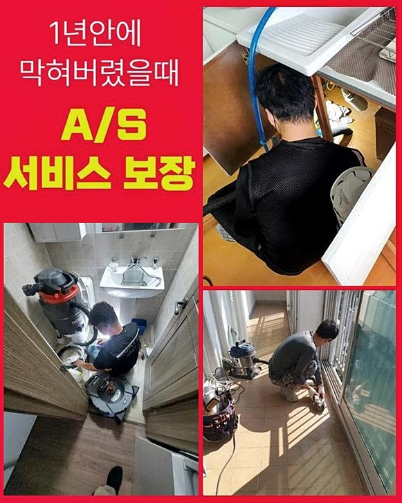
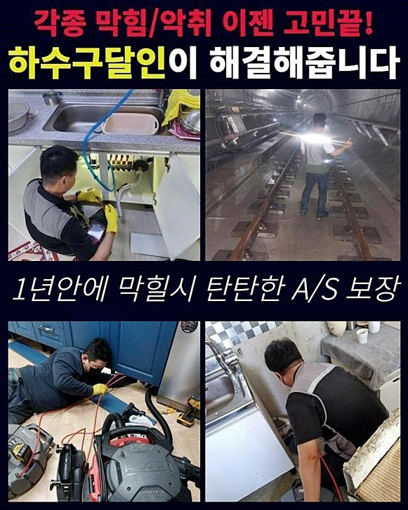
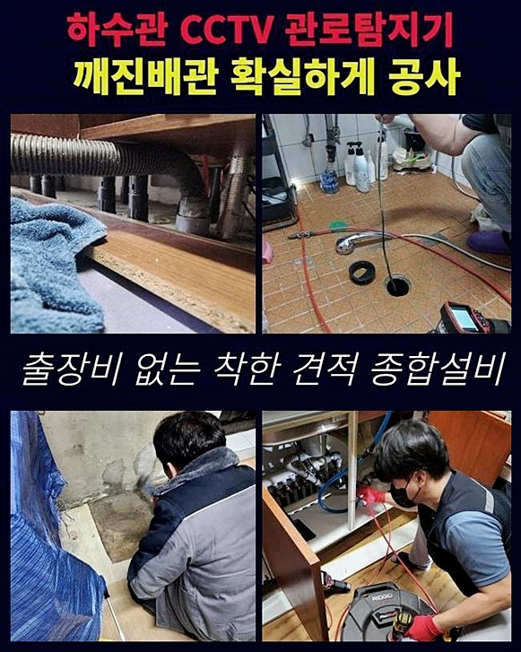
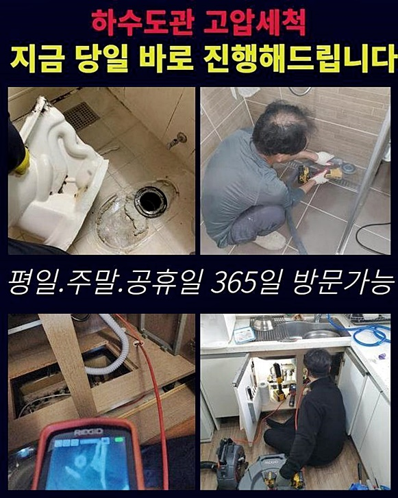
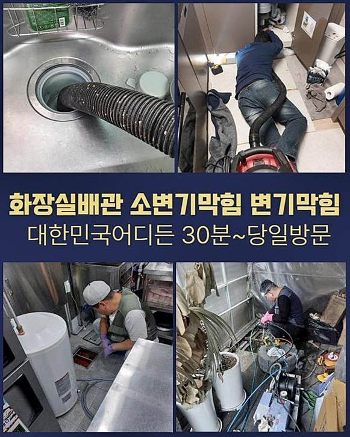

🏠 포승읍변기막힘 원평동 배관내시경카메라 누수
용인시 처인구 배관막힘 전문 시공 후기

📋 작업 개요
- 위치: 용인시 처인구, 수원시 영통구, 화성시 동탄
- 서비스 유형: 배관막힘, 누수수리, 내시경점검
- 작업 일시:
- 업체명: 하수구수사대 (010-5615-2118)
🔍 문제 상황
포승읍변기막힘 원평동 배관내시경카메라 누수
하수배관에 누적된 기름들로 인해 생긴 막힘상황과 욕실배수관에서 오수가 역류하는 상황들을 대응하는 단계들을 텍스트와 사진으로 알려드릴게요
배수파이프 역행상황과 하수도관막힘은 평상시에 심각한 방해가 되는 주된 이슈들 중 한가지입니다
주방 하수구와 세면볼부터 욕실공간까지 물이 통과하는 각 부분들에서 이러한 상황이 생길 우려가 있죠
많은분들이 웹상에서 검색을 하거나 주변사람들의 의견을 듣고 값싼 기기를 동원해 불순물 배출이나 화학성분을 사용하여 다양한 해결대책을 실행해보게됩니다
그러나 이러한 방법이 배수 설비에 되려 손상을 야기할수 있는 상황을 주의하여야 하죠
실질적으로 전문 장비들을 취급하는 전문인도 심한 하수배관 청소 때문에 배수설비에 파손을 일으키는 경우들이 존재합니다
며칠전 어떤 고객님이 이런 방식들을 자신이 해보신 후 결과적으로는 저희 기술자의 조언을 의뢰하셨습니다
이런 사례를 통해 하수도 막힘현상의 해결을 하려면 전문성과 독창적인 대응책이 요구된다는것을 깨닫게됩니다
하수관막힘 현장내에서 우리 전문팀이 화장실 오수관의 막힘현상을 해소하기 위하여 집합하였습니다
생활용수를 배수관으로 흐르게 할 때 거슬러 올라오게 되는 이물질이 관찰되었습니다

🔎 원인 분석
💡 전문가 진단: 정밀 진단 장비를 사용하여 슬러지의 고착 여부를 판명하고 타격/세척 작업을 실시했습니다.
이 문제는 굳어진 지방질과 각종 불순물이 하수관의 결합부분이나 틀어진 경사로에 누적되어 일어나게 되었습니다
하지만 걱정하지 마세요 우리들은 시설물 고장을 대처하기 위해 첨단 장비들과 숙련된 기술을 갖추고 있기 때문에 고객님들의 고민을 풀어낼 준비를 갖추고 있습니다
하수관 안쪽의 기름과 오염물을 치워내면 이후 막힘 상황은 생기지 않아 배수관 막힘상황을 완벽하게 수리할 수 있어요
이런 배수구 문제들을 없앨 수 있는 대응 방안들을 설명드리겠습니다
가장 먼저 사용할 해결책은 전동 스프링 장치를 사용하는 방식입니다
막혀있던 배관에 스프링 청소기를 넣어주고 작동시켜 하수관 속의 기름때 덩어리를 분해한 후 수도를 틀어서 외부로 내보냅니다
하수구 주위에 남아있는 자잘한 찌꺼기들을 제거하기 위하여 석션기구를 배수관에 넣고 여러번 반복하여 청소해주었습니다
또 다른 방법들로는 플렉스 샤프트 기기를 활용하는 것입니다
샤프트장치는 가변성이 좋아 구불구불한 배수관 안쪽도 어렵지 않게 들어가 기름때 덩어리를 분쇄한 후 흡입장치로 반복해서 흡입하여 배수구 속의 이물질을 완벽하게 없앱니다
깨끗한 물을 흘려서 잔여 불순물들을 치운다음 하수도를 말끔하게 보존하게됩니다
하수도 깊숙이 잔재한 모래나 돌멩이등의 찌꺼기들은 고압세정 절차로 말끔히 해결해드리고 있습니다
배수관에 끼어있는 귀중한 물건이 있다거나 배수관이 노후되어 휘어지거나 문제가 생겼을 땐 배수파이프를 정비하여 원래 모습으로 복원할 수 있어요

🔧 작업 과정
배수구막힘 현상을 처리하기 위하여 첫번째로는 막혀있는 곳을 조사하고 나서 높은 강도의 석션 기능이 탑재된 장치를 이용해 배수구 안쪽의 기름때 그리고 슬러지들을 흡착하여 청소했어요
석션기구는 약한 막힘 현상 해소방법으로 유용하나 견고한 막힘 혹은 배수관 깊은곳의 이물질들을 해결할때는 한계점이 존재해 이와같은 경우에는 추가적인 기구를 투입합니다
한 건물 장소에서는 막힘현상을 장기간 방치한 결과 극악의 상황에 도달했고 석션처리를 통해 수리가 불가능한 것으로 판단했습니다
그렇기 때문에 배수관 안쪽을 재차 검토하고 샤프트 장치로 처리하기로 판단을 내렸습니다
하수파이프막힘은 건축물의 배수장치에 막대한 결과를 발생시키는 현상으로 막힌 곳 때문에 물이 올라오거나 역한 냄새가나므로 위생적으로 문제가 됩니다
문제현장내에서는 드릴 형태를 가진 전문 샤프트기계를 이용하여 고속으로 돌아가는 기기가 배수관 내의 찌꺼기들을 분쇄하고 제거 과정들을 진행하였습니다
주택 하수배관막힘 수리는 손쉬운 과정들이 아니기에 발생 원인들을 면밀히 조사하여 기본적인 배수 설비 장애를 고쳐야합니다
이를 무시할 경우 배관이 재차 역류나 불쾌한냄새가 심해지게 됩니다
저희 업체는 여러종류의 최신형 기기를 보유하고 있는 설비 전문가로서 노련한 정비사가 있어 문제점을 정확하게 수리할 수 있어요
하수도관막힘과 배수파이프 역행상황은 일상에서 때때로 겪게되지만 배관라인 막힘을 방지하기 위해선 원인들을 파악하고 신중하게 다루는 것이 필수적입니다
배수관 이외에도 하수가 통과하는 전 구역은 꾸준한 유지보수를 해서 장애가 생기지 않도록 케어하는 것이 유익합니다
스케일링 클리닝을 위해 석션기기와 샤프트기기를 활용하여 배관속의 이물질들을 제거하고 관찰용 내시경장치를 활용하여 배수구 속을 카메라 영상으로 남은 이물질이 있는지 조사하였습니다
주택에서 나타난 하수도 막힘상황을 혼자 없애려는 시도는 받아들일 수 있습니다
그런데 수리를 하다가 예상치 못한 새로운 문제상황이 유발될 가능성이 있는 위험을 생각해보면 전문인의 지원을 의뢰하는 것이 더 확실한 해결잭이 됩니다
작은 문제일땐 약물이나 기기들을 사용해 스스로 조치가능합니다
여기서 주의해야 하는 점은 막힘수준과 원인을 명확히 알아내고 구매한 기구나 화학제품을 적절히 활용하여야 합니다
부주의하게 다룰경우 하수파이프나 배수파이프에 데미지를 발생시키게 됩니다
만약 이런 시도들이 실패하더라도 염려하지 마세요
저희 전문업체는 이러한 어려움을 신속하고 능률적으로 해결 가능하며 그렇기 때문에 시간과 수리비를 절감하며 배수관의 막힘이나 균열로 일어나게 될 심각한 상황을 미리 피하게 됩니다


✅ 작업 완료
자신이 고치려다가 하수배관에 균열이 생길 위험성이 있으니 내시경기기 점검을 우선적으로 받는것이 안전한 방법이에요
역한 냄새들을 없애드리려고 성능이 뛰어난 하수구트랩을 설치완료했어요
그런 후 세면대에서 베테랑 작업자는 물을 틀어 배수시스템이 잘 작동하는지 점검하고 물이 문제없이 흘러가는 것을 확인했어요
화장실의 하수관 악취 처리 수리비는 현장 컨디션과 막힌 상태 및 악취의 심각도를 진단 후 변하기 때문에 저희기술자들은 문제현장을 점검하고 구체적인 비용을 제시합니다
우리 전문팀들은 현장에 나갈때 추가로 출장요금을 받지 않아 고객님께서 별도요금을 고민하지 마세요



⚠️ 하수구 배관 막힘 예방 및 관리 가이드
- ✅ 머리카락, 비닐, 물티슈 등 물에 분해되지 않는 이물질은 절대 흘려보내지 마세요.
- ✅ 기름기 많은 식기는 설거지 전 키친타올로 먼저 기름때를 닦아내세요.
- ✅ 주기적으로 배수구에 뜨거운 물을 가득 부어주어 유지방 고착을 방지하세요.
- ✅ 작업 후 1년 이내 재발 시 무상 A/S 보증 서비스를 제공합니다.
💡 핵심 정리
- 확실한 장비 작업(내시경 점검 및 샤프트 스케일링)으로 원인을 뿌리 뽑습니다.
- 작업 후 1년 이내에 동일한 부위 재발 시 100% 무상 A/S 서비스를 보장합니다.
- 서울 · 경기 · 인천 전 지역에 24시간 언제든 긴급 출동할 수 있도록 항시 대기 중입니다.
❓ 자주 묻는 질문 (FAQ)
🚨 용인시 처인구 배관막힘 문제로 고민이신가요?
정확한 원인 진단과 확실한 시공으로 재발 없는 해결을 약속드립니다.
24시간 긴급 출동 | 서울 · 경기 · 인천 전지역 | 1년 내 재발 시 무상 A/S